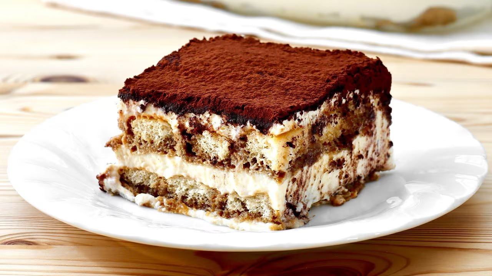

Tiramisu

Description
Tiramisu is a classic Italian dessert made with layers of espresso-soaked ladyfingers and a rich mascarpone cream, dusted with cocoa powder.
It's elegant, indulgent, and requires no baking — perfect for impressing guests.
Ingredients
- 300g ladyfinger biscuits
- 500g mascarpone cheese
- 4 eggs, separated
- 100g sugar
- 2 cups strong espresso, cooled
- 2 tbsp rum or marsala wine (optional)
- Cocoa powder for dusting
Steps
- Beat egg yolks with sugar until pale and creamy.
- Mix in mascarpone until smooth.
- Beat egg whites until stiff peaks form, fold into mascarpone mixture.
- Mix espresso with rum if using.
- Dip ladyfingers briefly in espresso and layer in a dish.
- Spread half the mascarpone cream over the ladyfingers.
- Repeat with another layer of ladyfingers and cream.
- Dust with cocoa powder, refrigerate at least 4 hours before serving.
Home